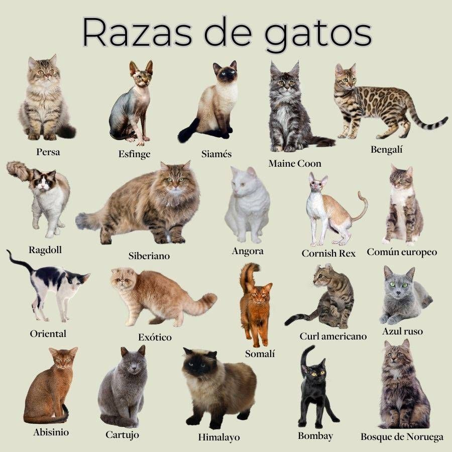
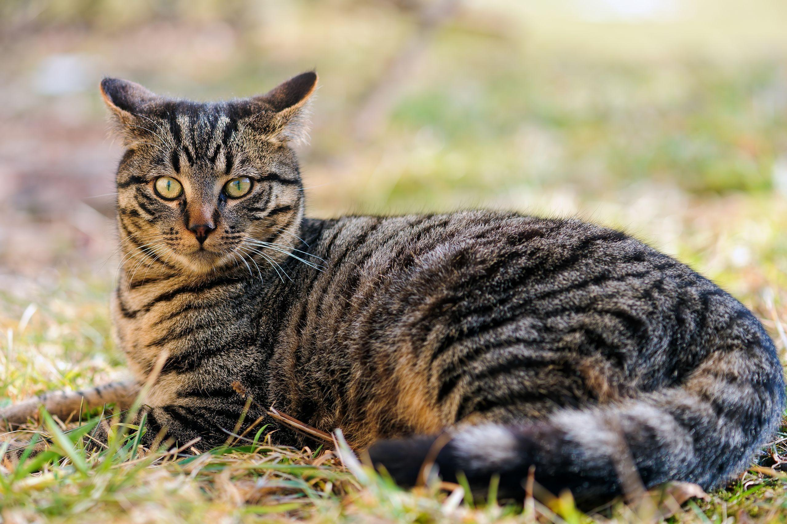

Variedades y tipos de gatos
A lo largo de la historia, la domesticación y la selección genética han dado lugar a una enorme diversidad en el mundo felino. Es común confundir los términos, pero mientras que los tipos de gatos se definen generalmente por su estructura física, tamaño y el largo de su pelaje (como los gatos de pelo corto, largo o sin pelo), las variedades se refieren más específicamente a las distintas razas oficiales y los patrones de color que adoptan. Esta combinación entre fisonomía y genética es lo que permite que existan desde felinos robustos y salvajes hasta ejemplares esbeltos y hogareños en todo el mundo.

El gato más común del mundo
A pesar de la existencia de razas exóticas y de pedigrí, la gran mayoría de los felinos que comparten nuestras vidas pertenecen al grupo de los gatos comunes o mestizos. Estos animales son el resultado de generaciones de mezclas naturales, lo que les otorga una resistencia física superior, una salud de hierro y una enorme variedad de colores y patrones en su pelaje, como el atigrado o el carey. Al no estar limitados por los estándares estrictos de una raza pura, los gatos comunes representan la esencia más auténtica, adaptable y popular del mundo felino en todo el planeta.
